Malaysia ID / Passport — MyKad
Detected: Malaysia MyKad · Exact match: 100.00% · Raw OCR confidence: 92.27%
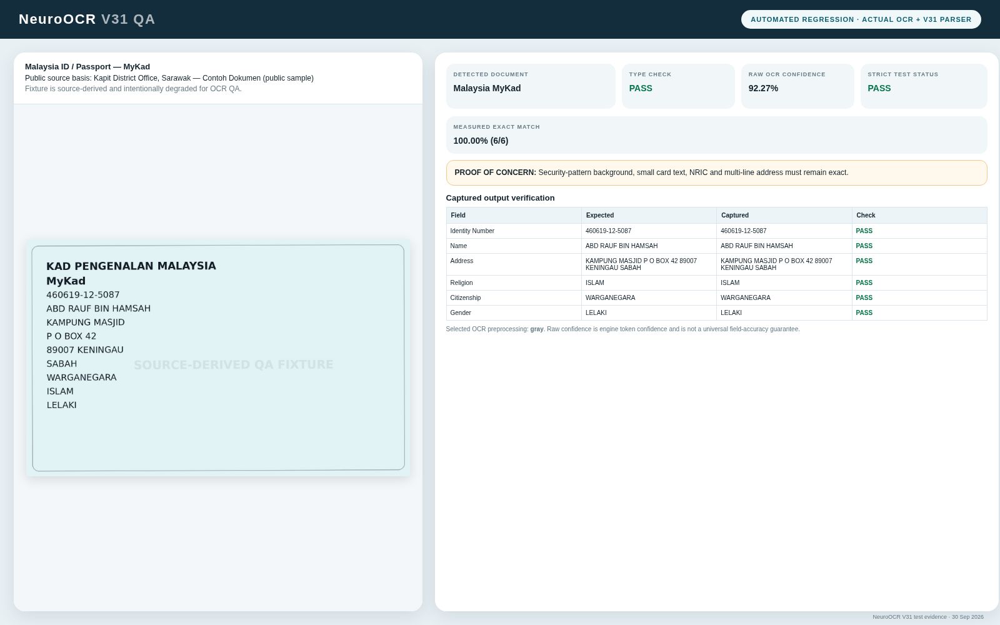
Concern: Security-pattern background, small card text, NRIC and multi-line address must remain exact.
Browser-rendered evidence from actual Tesseract OCR output and the V31 parser. Public-source fixtures are source-derived and degraded for QA; they are not claimed to be downloaded originals.
Detected: Malaysia MyKad · Exact match: 100.00% · Raw OCR confidence: 92.27%

Concern: Security-pattern background, small card text, NRIC and multi-line address must remain exact.
Detected: Malaysia MyPR · Exact match: 100.00% · Raw OCR confidence: 91.69%
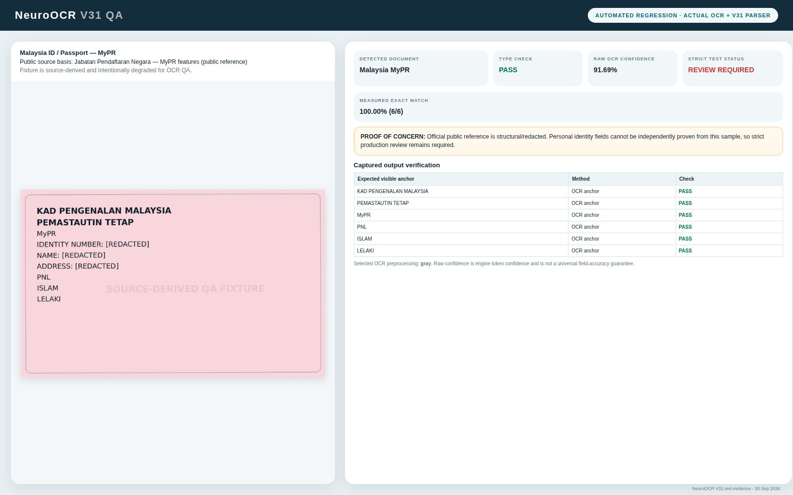
Concern: Official public reference is structural/redacted. Personal identity fields cannot be independently proven from this sample, so strict production review remains required.
Detected: Malaysia Passport · Exact match: 100.00% · Raw OCR confidence: 93.20%
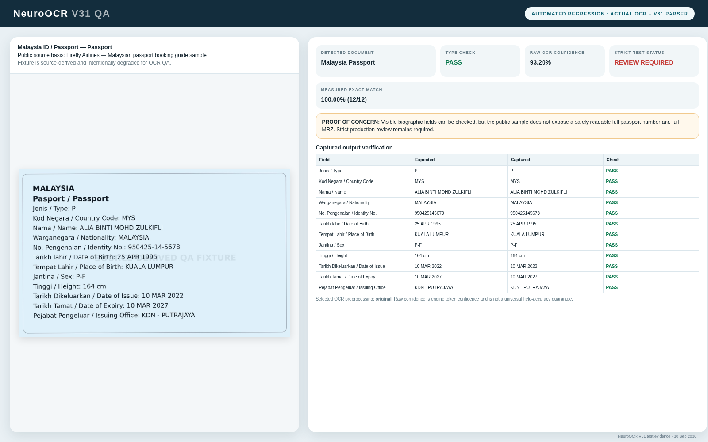
Concern: Visible biographic fields can be checked, but the public sample does not expose a safely readable full passport number and full MRZ. Strict production review remains required.
Detected: Malaysia Driving Licence · Exact match: 100.00% · Raw OCR confidence: 93.45%
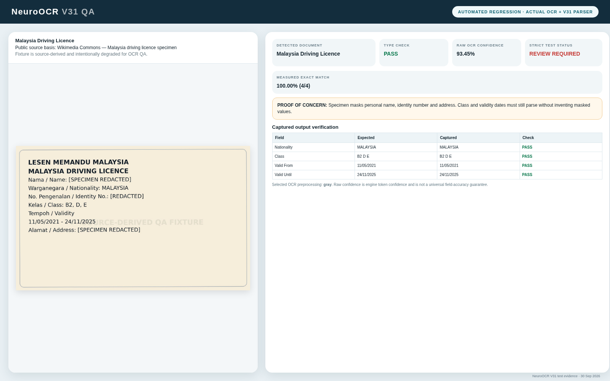
Concern: Specimen masks personal name, identity number and address. Class and validity dates must still parse without inventing masked values.
Detected: CIDB PPK / Perakuan Pendaftaran · Exact match: 100.00% · Raw OCR confidence: 92.01%
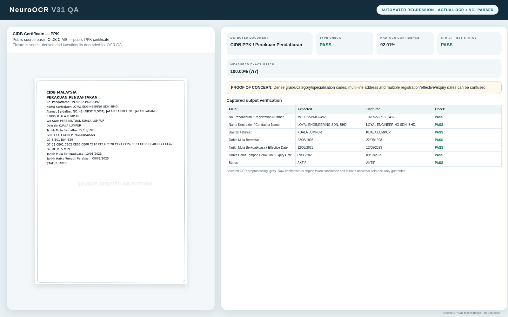
Concern: Dense grade/category/specialisation codes, multi-line address and multiple registration/effective/expiry dates can be confused.
Detected: SSM Business Registration Certificate · Exact match: 100.00% · Raw OCR confidence: 95.56%
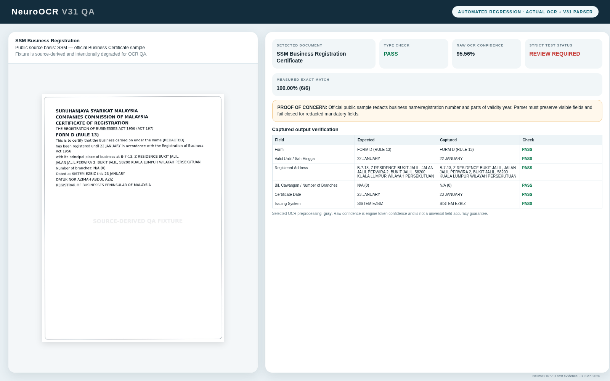
Concern: Official public sample redacts business name/registration number and parts of validity year. Parser must preserve visible fields and fail closed for redacted mandatory fields.
Detected: SSM Company Profile · Exact match: 100.00% · Raw OCR confidence: 93.29%
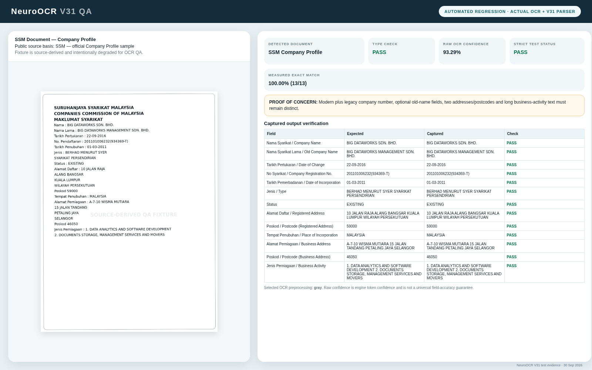
Concern: Modern plus legacy company number, optional old-name fields, two addresses/postcodes and long business-activity text must remain distinct.
Detected: Invoice / Receipt · Exact match: 100.00% · Raw OCR confidence: 95.18%
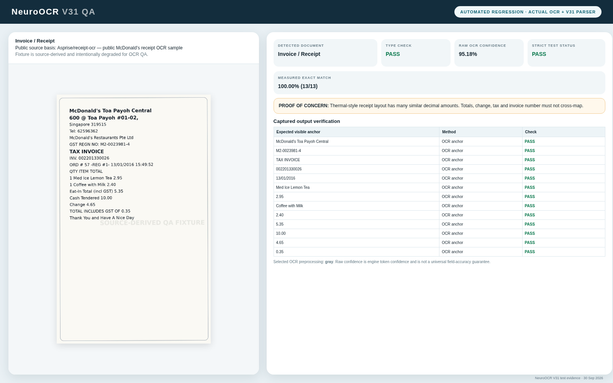
Concern: Thermal-style receipt layout has many similar decimal amounts. Totals, change, tax and invoice number must not cross-map.
Detected: Form / Application · Exact match: 100.00% · Raw OCR confidence: 93.24%
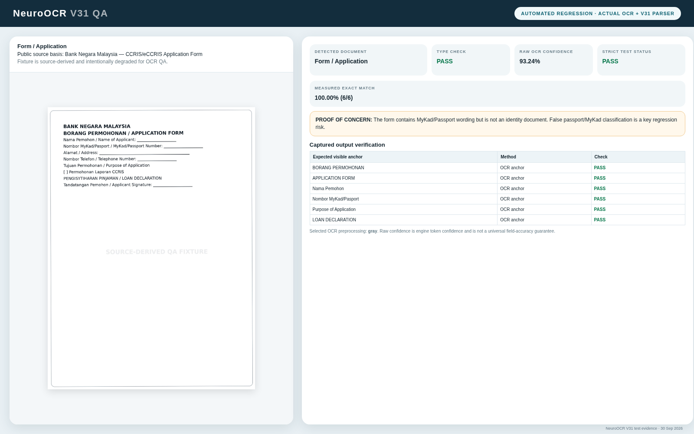
Concern: The form contains MyKad/Passport wording but is not an identity document. False passport/MyKad classification is a key regression risk.
Detected: Letter / Memo · Exact match: 100.00% · Raw OCR confidence: 96.03%
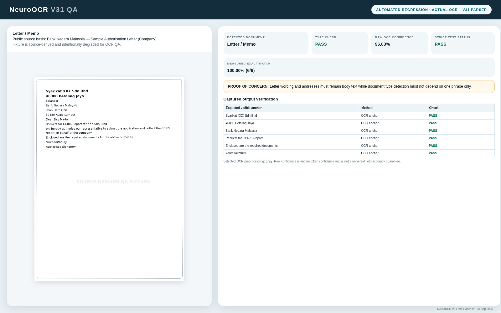
Concern: Letter wording and addresses must remain body text while document type detection must not depend on one phrase only.
Detected: Certificate / Licence · Exact match: 100.00% · Raw OCR confidence: 93.77%
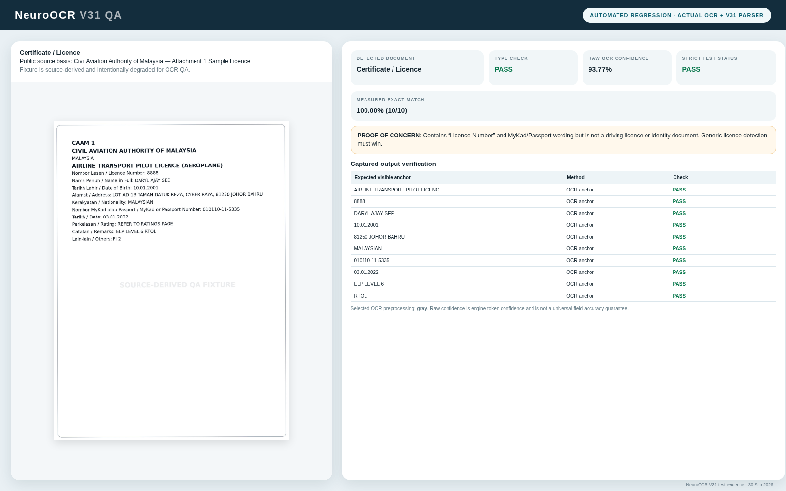
Concern: Contains “Licence Number” and MyKad/Passport wording but is not a driving licence or identity document. Generic licence detection must win.
Detected: Report / Statement · Exact match: 100.00% · Raw OCR confidence: 96.03%
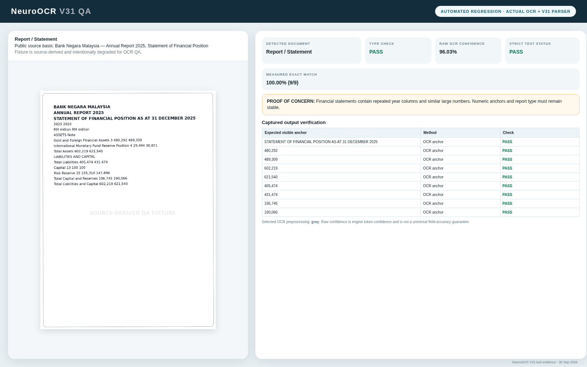
Concern: Financial statements contain repeated year columns and similar large numbers. Numeric anchors and report type must remain stable.
Detected: General Document · Exact match: 100.00% · Raw OCR confidence: 92.65%
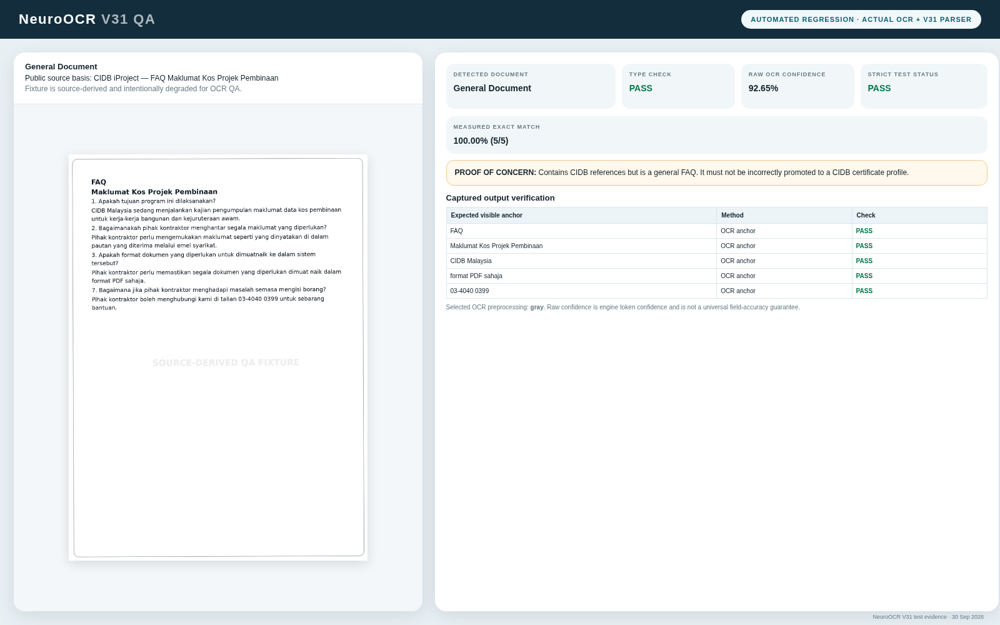
Concern: Contains CIDB references but is a general FAQ. It must not be incorrectly promoted to a CIDB certificate profile.